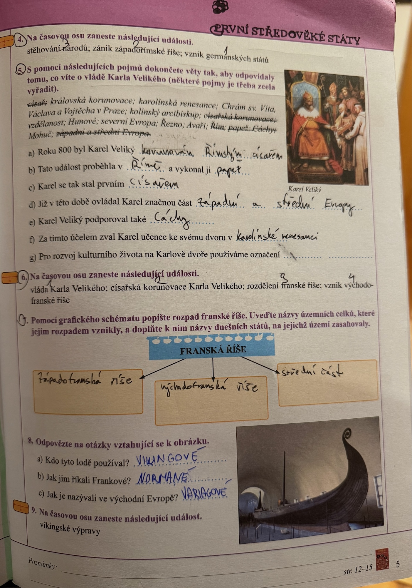
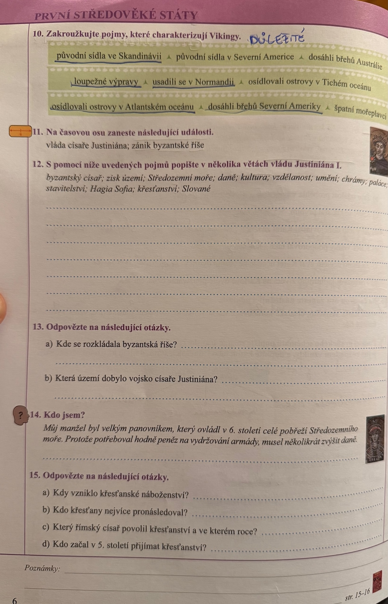
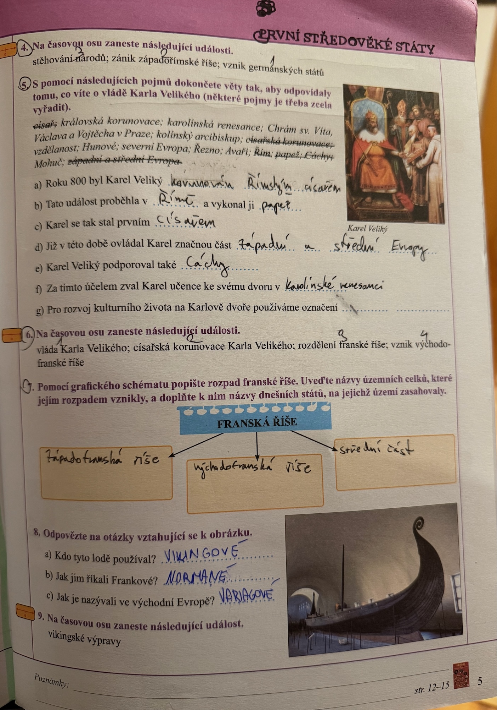
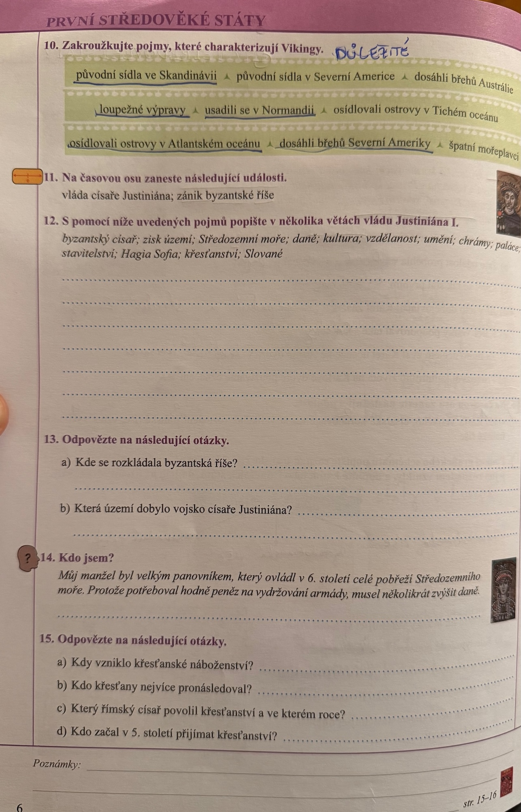

Raný středověk: První středověké státy
Hlavní idea: Po zániku Západořímské říše vznikají první středověké státy.
Velké stěhování národů
- 4.–5. století – Germáni osidlují Evropu
- Z kmenů vznikají první středověké státy
Tři velké říše
- Franská říše – křesťanství
- Byzantská říše – křesťanství
- Arabská říše – islám
Franská říše (úvod)
- Vznik z germánského kmene Franků v povodí Rýna
- Z kmenů se stává "velká a mocná říše"
Franská říše za vlády Karla Velikého
Karel Veliký (vládl 768–814)
- První středověký císař na Západě
- Korunován v Římě roku 800
- Považoval se za dědice moci římských císařů
- Vybudoval nejmocnější panovnický dvůr západní Evropy
Územní rozmach
- Alpy, sever Itálie, část Španělska
- Porážka Avarů
- Správa říše pomocí hrabat a markrabat
Kultura u dvora v Cáchách
- Karolinská renesance
- Nejlepší učenci a řemeslníci z Evropy
- Školy při klášterech
- Opisování knih
- Písmo: karolinská minuskule
Rozdělení Franské říše
Po Karlovi
- Syn a vnuci nedokázali říši udržet
- Verdunská smlouva (843): rozdělení na:
- Západofranskou říši
- Východofranskou říši
- Střední říši (Lotharingie/Itálie)
10. století
- Ve Východofranské říši se formuje Svatá říše římská
Během stěhování Germáni zakládají říše. Výjimkou, která přetrvala, je franská. V 9. století se dělí na Západ a Východ. V 10. století vzniká Svatá říše římská.
Vikingové
Severní Evropa (Skandinávie) v 9.–11. století
- Život: drsné podmínky, chov dobytka, lov, rybolov
- Dřevo jako hlavní materiál
Mořeplavci – Vikingové / Normané / Varjagové
- Dlouhé lodě s dračí přídí
- Plavby po moři i řekách
- Výpravy: obchod i loupeže
- Dosah výprav:
- Anglie
- Po Seině do Paříže
- Až do Itálie a na Pyrenejský poloostrov
- Osídlení Islandu a Grónska
- Krátce Amerika (před Kolumbem!)
Společnost
- Thing (Althing) – shromáždění
- "První středověká demokracie v Evropě"
Vikingové podnikali loupežné výpravy, ale věnovali se i obchodu a řemeslu. Dosáhli břehů Ameriky.
Byzantská říše (Východořímská)
Kontinuita Říma na Východě
- Říše se nerozpadla
- Držela tři světadíly: Evropa, Asie, Afrika
- Hlavní město: Konstantinopol (cařihradské hradby, paláce)
Císař Justinián (527–565)
- Obnovy říše, zvýšení daní
- Někdy povstání
- Podpora vzdělanosti
- Theodora – manželka, schopná rádkyně
Rozsah říše
- Do 11. století větší než západní Evropa
- Později územní ústup
- Pád: 1453 – Turci dobývají Konstantinopol
Byzantská kultura a vzdělanost
Stavby a umění
- Hagia Sofia
- Mozaiky
- Řecké i římské stavební umění
Vzdělanost
- Opisování knih (Bible i antičtí autoři)
- Klášterní knihovny
Šíření křesťanství v Evropě
- Od 4. století státní náboženství Říma
- Ve 4.–5. století proniká k Germánům
- V raném středověku součást života lidí (svátky, obřady)
Organizace křesťanské církve
Hierarchie (pyramida)
- Papež (nejvyšší)
- ↓ Kardinálové
- ↓ Arcibiskupové
- ↓ Biskupové, opati
- ↓ Faráři, mniši
Mnišství
- Kláštery s přísnými pravidly
- Vzdělanostní centra
Rozdělení církve (1054)
- Západní – katolická
- Papež v Římě
- Bohoslužba latinsky
- Východní – pravoslavná
- Patriarchové
- Bohoslužba v národních jazycích/řečtině
Byzantská říše přetrvala stěhování národů. Justinián téměř obnovil římskou říši. Později území zmenšováno Slovany a Turky. Křesťanství se šíří do Evropy. Organizace a rozdělení církve.
Arabská říše (islám)
Arabský poloostrov
- Beduíni (kočovní pastevci)
Vznik islámu v 7. století
- Prorok Muhammad
- Víra v jediného Alláha
Pět pilířů islámu
- Vyznání víry
- Modlitba 5× denně
- Almužna
- Půst v Ramadánu
- Pouť do Mekky
Pojmy
- Muslimové – vyznávači islámu
- Chalífát – arabská říše
- Korán – svatá kniha
- Mešita – chrám s minaretem
Rozšíření
- Sjednocení Arabů
- Postup přes Blízký východ
- Severní Afrika
- Pyrenejský poloostrov
Co přinesli Arabové Evropě
Obchod
- Karavany
- Koření, látky, koberce
Věda
- Matematika: algebra, arabské číslice
- Astronomie
- Fyzika
- Zeměpis
- Lékařství
Umění a architektura
- Geometrické ornamenty
- Mešity s minarety
- Příklad: Skalní dóm v Jeruzalémě
Islám přinesl Evropanům kontakt s arabskou kulturou, řemesly a vědou.
Klíčové pojmy k opakování
Franská říše
Karel Veliký, karolinská renesance, Verdunská smlouva, Cáchy
Byzantská říše
Justinián, Konstantinopol, Hagia Sofia, císař, byzantský císař, Theodora, mosty s antikou
Arabská říše
Islám, Muhammad, Korán, muslimové, mešita, minaret, pět pilířů, chalífát
Vikingové
Normané, Varjagové, dlouhé lodě, Thing, Skandinávie, Island, Grónsko, Amerika
Křesťanství
Papež, kardinál, biskup, farář, mnich, klášter, rozdělení církve 1054, katolická církev, pravoslavná církev
📖 Stránky z učebnice
Klikni na obrázek pro zvětšení:
📝 Pracovní sešit
 


